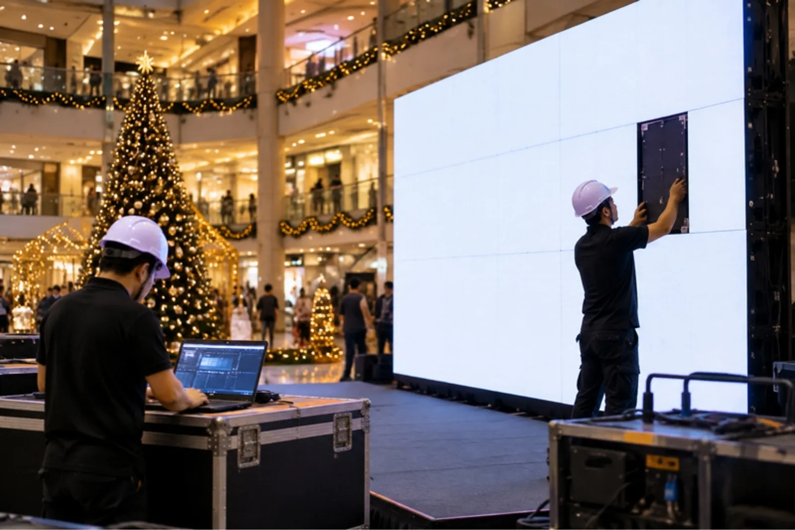

LOTUS VISUAL JOURNAL / ビジネスと戦略 #01
祝日を 1 週間ずらした大統領。
「売れる日」は、つくれるのか
もし、売上のために、国の祝日を動かせるとしたら。
そんな乱暴な話が、本当にあったのでしょうか。あったのです。今年のブラックフライデーは 11 月 27 日。街のあちこちで「今週だけ」の文字が光り始める前に、「買い物の日」がどうやって生まれてきたのかを、さかのぼってみます。
01 / 19391939 年、感謝祭が 2 回あった年
アメリカの感謝祭(サンクスギビング)は、当時「11 月の最後の木曜日」でした。ところが 1939 年の 11 月は、木曜日が 5 回ある年。感謝祭は 11 月 30 日になり、クリスマスまでの買い物の期間が短くなってしまいます。
世の中は大恐慌のあと。多くの人がクリスマスの買い物を感謝祭のあとに始めるのに、その日数が 24 日しかない。商売への影響を心配した経済界の声を受けて、ルーズベルト大統領は感謝祭を「11 月 30 日ではなく 23 日」とする布告を出しました。
反応は、大混乱でした。ホワイトハウスには何千通もの手紙が届き、知事の中には 30 日を感謝祭とする人も出ました。住む州によって、感謝祭の日が違う。家族が集まる日が、州境で割れてしまったのです。結局、1941 年 12 月 26 日、議会は「11 月の第 4 木曜日」を感謝祭とする法律をつくり、日付の争いに決着をつけました。
02 / CALENDAR「売れる日」は、カレンダーの発明
この話が示しているのは、需要には「器」があるということです。人は、お金と欲しいものがあるだけでは動きません。「この日に買う」という目印があって、はじめて一斉に動く。カレンダーは、その器の形を決める道具です。
器を自分でつくった例は、ほかにもあります。中国の 11 月 11 日は、1 が並ぶことから「独身の日」と呼ばれていました。アリババはこの日を通販の大セールに仕立て、2009 年に初めて開催。参加したのは 27 の店で、売上は 5,000 万元だったと報じられています。何もなかった日付が、たった一社の企画で、巨大な買い物の日になりました。
日本でも 2016 年、イオンが 11 月 25 日からの 3 日間を「ブラックフライデー」と名付けたセールを計画し、ユニーも初めて同じ名前の通販セールを開きました。狙いの一つは、年末商戦の時期に、お店へ足を運んでもらうこと。海の向こうの「器」を、そのまま借りてきたわけです。
人を一斉に動かすのは、値段だけではない。「この日」という、みんなが共有できる目印。
03 / NAME残ったのは、誰も望まなかった名前
では、「ブラックフライデー」という名前は、誰が考えた戦略だったのでしょう。ここで話がひっくり返ります。ブリタニカ百科事典によれば、この言葉を広めたのは小売業者ではなく、1960 年代のフィラデルフィアの警察官でした。感謝祭の翌日、郊外から押し寄せる買い物客と車の渋滞に、残業でかり出される。うんざりした「黒い金曜日」だったのです。
小売業者は最初、この暗い響きを嫌って使いませんでした。前向きな「ビッグフライデー」に言い換えようとした時期もありましたが、定着しませんでした。帳簿が黒字(ブラック)になる日だから、という明るい説明は、名前が広まったあとから付け足されたものだといいます。
大統領の布告で動かした日付は、混乱を生んだ。企業が考えた前向きな名前は、根付かなかった。そして残ったのは、現場の警察官がぼやいた呼び名でした。「売れる日」はつくれる。けれど、それが本当に根付くかどうかを決めるのは、そこで実際に動く人たちの実感なのかもしれません。
LOTUS VISUAL の現場では
フィラデルフィアの警察官の話は、イベントの仕事にもそのまま重なります。人が一斉に動く日は、その裏で一斉に忙しくなる人がいる日でもあります。年末のセールや季節のイベントは、会場の予定も、搬入口も、機材も、同じ時期に重なりがちです。
だから私たちは、山の「前」を大事にします。開店前や閉店後に限られる設営の時間を早めに確かめる。期間中に画面の内容を日ごとに切り替えるなら、差し替えの手順と担当を先に決めておく。人の流れが変わる場所に画面を置くときは、施設の方と動線を一緒に確認する。山の日に慌てないための段取りは、「もう失敗した」と決めてから、準備を始める にも書きました。
今日の持ち帰り
- 1939 年、買い物の日のために祝日が動いた。感謝祭は 1941 年の法律で「11 月の第 4 木曜日」に。
- 人を動かすのは「この日」という目印。11 月 11 日も、日本のブラックフライデーも、カレンダーの発明。
- 山の日は、山の前に決まる。人が集まる日ほど、設営時間・差し替え・動線を先に確かめる。
出典:National Archives Foundation「DocsTeach」Letter from John Taylor to FDR about Thanksgiving date change(1939 年の布告、24 日の買い物期間、州ごとの対立、1941 年 12 月 26 日の法律。原資料は米国立公文書館 フランクリン・D・ルーズベルト図書館所蔵)。Encyclopaedia Britannica「Black Friday」(1960 年代フィラデルフィア警察の呼び名、「Big Friday」の試み、「黒字」説はのちの説明、1939〜1941 年の日付変更)。South China Morning Post「Explainer: Why do millions of people choose to shop online on November 11?」(2009 年に初開催、27 店、5,000 万元)。ネットショップ担当者フォーラム「ユニー、ECサイトで『ブラックフライデーセール』を11/28から開催」2016 年 11 月 24 日(イオンの 11 月 25〜27 日のセール計画、年末商戦期の店頭への呼び込み)。2026 年 11 月 10 日閲覧。現場の例は一般的な説明で、特定の案件を表しません。